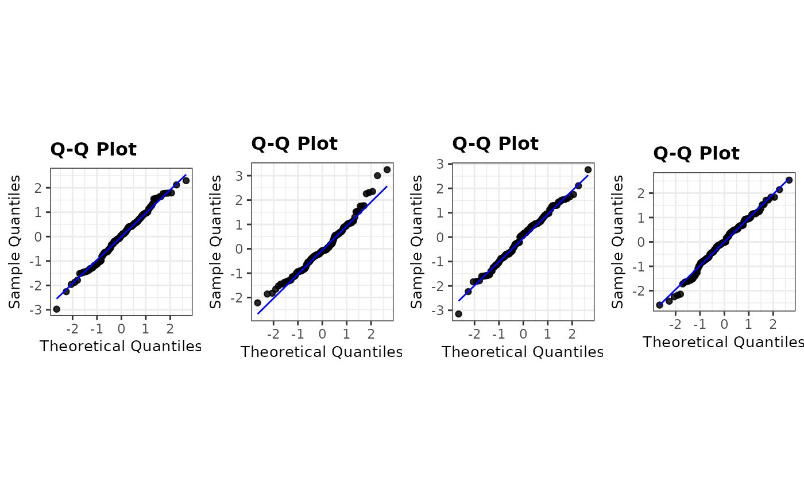

Panel of Diagnostic Residual Plots from a fitted model and simulated responses from the same model.
resid_calibrate.RdUsed to calibrate expectations for simulation variability when assumptions are
true (see simulate), to compare to the actual observed residuals in any
of a suite of diagnostic plots. This function is based on the resid_compare
function and requires the fitted model and the data set.
Usage
resid_calibrate(
model,
plots = "default",
nsim = 1,
identify = TRUE,
shuffle = FALSE,
type = NA,
bins = 30,
smoother = TRUE,
qqline = TRUE,
qqbands = FALSE,
scale = 1,
theme = "bw",
axis.text.size = 10,
title.text.size = 12,
title.opt = TRUE,
nrow = NULL,
alpha = 0.6,
coordfix = TRUE,
return_plot_list = FALSE
)Arguments
- model
Model fit using either
lm,glm,lmer,lmerTest, orglmer.- plots
Plots chosen to include in the panel of plots. The default panel includes a residual plot, a normal quantile plot, an index plot, and a histogram of the residuals. (See details for the options available.)
- nsim
Number of simulated models, defaults to 1
- identify
TRUE to label true residuals, FALSE to hide
- shuffle
TRUE to shuffle the order of the residuals, FALSE to have real data last
- type
Type of residuals to use in the plot. If not specified, the default residual type for each model type is used. (See details for the options available.)
- bins
Number of bins to use when creating a histogram of the residuals. Default is set to 30.
- smoother
Indicates whether or not to include a smoother on the residual vs fitted and index plots. Specify TRUE or FALSE. Default is set to TRUE.
- qqline
Indicates whether to include a 1-1 line on the qq-plot. Specify TRUE or FALSE. Default is set to TRUE.
- qqbands
Indicates whether to include confidence bands on the qq-plot. Specify TRUE or FALSE. Default is set to FALSE.
- scale
Scales the size of the graphs in the panel. Takes values in (0,1].
- theme
ggplot2 theme to be used. Current options are
"bw","classic", and"grey"(or"gray"). Default is"bw".- axis.text.size
Specifies the size of the text for the axis labels of all plots in the panel.
- title.text.size
Specifies the size of the text for the titles of all plots in the panel.
- title.opt
Indicates whether or not to include a title on the plots in the panel. Specify TRUE or FALSE. Default is set to TRUE.
- nrow
Sets the number of rows in the panel.
- alpha
Sets the alpha level for displays with points. Default is set to 0.6.
- coordfix
Uses fixed aspect ratio for QQ-plots and yvp. Default is TRUE.
- return_plot_list
If specific plot types are supplied to the `plots` options, this option indicates whether to return a list of individual plots. Specify TRUE or FALSE. Default is set to FALSE.
Details
Creates a panel of residual diagnostic plots the actual model and simulated responses from that model. Currently accepts models of type "lm" (future versions will accept "glm", "lmerMod", "lmerModLmerTest", and "glmerMod").
The first two sections below contain information on the available input
options for the plots and type arguments in resid_compare.
The third section contains details relating to the creation of the plots.
Options for Plots
The following options can be chosen for the plots argument.
"all": This creates a panel of all plot types included in the package that are available for the model type input into
residpanel. (See note below.)"default": This creates a panel with a residual plot, a normal quantile plot of the residuals, an index plot of the residuals, and a histogram of the residuals.
"R": This creates a panel with a residual plot, a normal quantile plot of the residuals, a location-scale plot, and a leverage versus residuals plot. This was modeled after the plots shown in R if the
plot()base function is applied to anlmmodel. This option can only be used with anlmorglmmodel."SAS": This creates a panel with a residual plot, a normal quantile plot of the residuals, a histogram of the residuals, and a boxplot of the residuals. This was modeled after the residpanel option in proc mixed from SAS version 9.4.
A vector of individual plots can also be specified. For example, one can specify
plots = c("boxplot", "hist")orplots = "qq". The individual plot options are as follows."boxplot": A boxplot of residuals"cookd": A plot of Cook's D values versus observation numbers"hist": A histogram of residuals"index": A plot of residuals versus observation numbers"ls": A location scale plot of the residuals"qq": A normal quantile plot of residuals"lev": A plot of leverage values versus residuals"resid": A plot of residuals versus predicted values"yvp":: A plot of observed response values versus predicted values
Note: "cookd", "ls", and "lev" are only available for "lm"
and "glm" models.
Options for Type
Several residual types are available to be requested based on the model type
that is input into resid_panel. These currently are as follows.
lmresidual options"pearson":The Pearson residuals"response": The raw residuals (Default for "lm")"standardized": The standardized raw residuals
glmresidual options"pearson": The Pearson residuals"deviance": The deviance residuals (Default for "glm")"response": The raw residuals"stand.deviance": The standardized deviance residuals"stand.pearson": The standardized Pearson residuals
lmer,lmerTest, andlmeresidual options"pearson": The Pearson residuals (Default for "lmer", "lmerTest", and "lme")"response": The raw residuals
glmerresidual options"pearson": The Pearson residuals"deviance": The deviance residuals (Default for "glmer")"response": The raw residuals
Note: The plots of "ls" and "lev" only accept standardized residuals.
Details on the Creation of Plots
- Boxplot (
boxplot) Boxplot of the residuals.
- Cook's D (
cookd) The horizontal line represents a cut-off to identify highly influential points. The horizontal line is placed at 4/n where n is the number of data points used in the
model.- Histogram (
hist) Plots a histogram of the residuals. The density curve overlaid has mean equal to zero and standard deviation equal to the standard deviation of the residuals.
- Index Plot (
index) Plots the residuals on the y-axis and the observation number associated with the residual on the x-axis.
- Leverage Plot (
lev) Plots the standardized residuals on the y-axis and the leverage values on the x-axis. A lowess curve is overlaid, and Cook's D contours are included for \(\alpha = 0.5\) and \(\alpha = 1\).
- Location-Scale Plot (
ls) Plots the square root of the absolute value of the standardized residuals on the y-axis and the predicted values on the x-axis. The predicted values are plotted on the original scale for
glmandglmermodels. A lowess curve is overlaid.- QQ Plot (
qq) Makes use of the
Rpackageqqplotrfor creating a normal quantile plot of the residuals.- Residual Plot (
resid) Plots the residuals on the y-axis and the predicted values on the x-axis. The predicted values are plotted on the original scale for
glmandglmermodels.- Response vs. Predicted (
yvp) Plots the response variable from the model on the y-axis and the predicted values on the x-axis. Both response variable and predicted values are plotted on the original scale for
glmandglmermodels.
Examples
# Fit a model to the penguins data
penguin_model <- lm(heartrate ~ depth + duration, data = penguins)
resid_calibrate(
model = penguin_model,
plots = "qq",
nsim = 3,
shuffle = TRUE,
identify = TRUE
)
#> [1] "Real residuals are in column 2"
